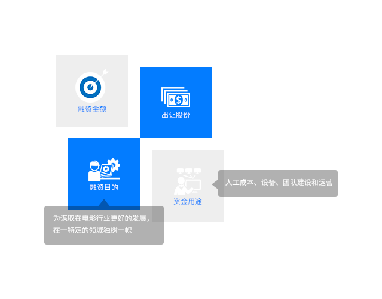

打造国内第一批Previz制作团队
Previz其实就是电影的前期剪辑在正式拍摄之前将拍摄内容简单制作一遍，用低模，简单动画展示出演员走位，取景，摄影机角度，摄影机运动等大方向，供导演，摄像指导等人拍摄时参考。
Previz团队可以帮助优化前期制作，最大限度的降低整个片子的成本，将导演和导演最亲近顾问的选择整合成到一个蓝图中，用于拍摄时和中期制作的参考。 Previz对导演和制片人来说都是个双赢的流程，它不仅将飘渺的创意具体化，而且确保了拍摄和后期制作的效率。Previz团队制作出Previz，导演提N轮反馈之后通过，然后导演再按照这个Previz计划来实施拍摄。Previz除此之外还有个很强大的功能，就是拉投资。形象、动态的视频比文字剧本更容易让对方明白这部电影故事的方向。

融资计划
国内动画电影、CG预告片、宣传片
国内一线电影（动画、实拍）
国内外电影（动画、实拍）
国内外一线电影